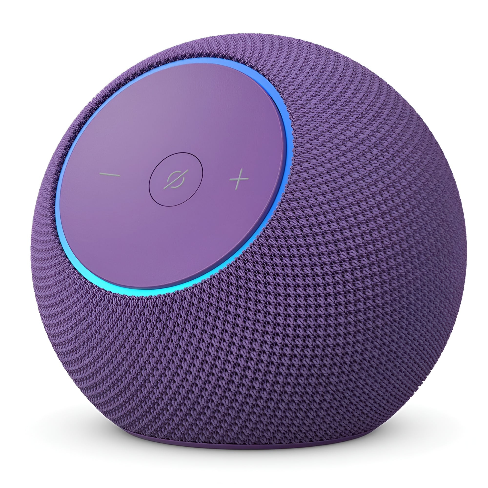

Bem-vindo ao mundo da Echo Dot
O Echo Dot é o alto-falante inteligente de maior sucesso da Amazon. Controlado por voz através da assistente virtual Alexa, ele foi desenhado para tornar as casas mais conectadas e as rotinas mais práticas.
Com ele, você pode reproduzir músicas, controlar dispositivos de casa inteligente, fazer chamadas, ler notícias, sintonizar estações de rádio e muito mais.
Hoje em dia a melhor do mercado é a Echo Dot Max onde nela temos:
Som Superior: Possui calibração acústica automática (ajusta o som ao ambiente) e entrega graves muito mais potentes que as versões comuns.
Processador AZ3: Hardware mais rápido projetado para rodar a nova IA generativa da Alexa de forma ultraveloz.
Hub Integrado: Vem com suporte nativo a Zigbee, Matter e Thread, permitindo conectar e controlar dispositivos de casa inteligente diretamente, sem precisar de outras centrais.
Sensores Omnisense: Detecta presença por ultrassom/radar, mede a temperatura do cômodo e aceita comandos por toque no topo.
